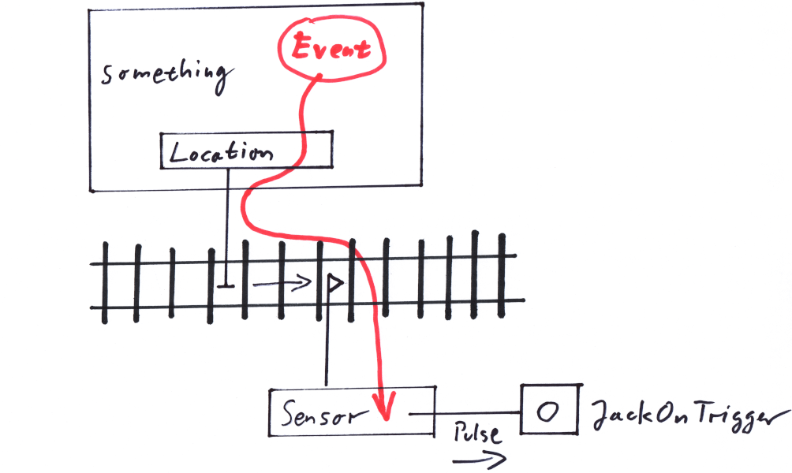

""
-
A Sensor along a track register the event of something passing by in its direction. As it turned out, there are many uses of such sensing devices. For example they might trigger on each axle passing by, counting up a counter each time. Other Sensors can be arranged to trigger for every axle that is leaving a certain area, counting the counter down. This can be used to lower a barrier as soon as the counter is greater than zero - and lift it up as soon as it becomes zero again. This way a road can get protected, even if it crosses multiple track lines.
Other uses might include sensing a train tip or a train end, passing the Sensor's location. The Sensor can get configured to only trigger under certain circumstances. E.g. if the velocity is inside a certain velocity range. It might be tempting to have the trackjoint (see Chapter 7) triggering Sensors on its journey along the tracks, but that is hardly ever useful. Better it is to start with a more general notion of a Location, relaying an Event to trigger the Sensor:
While a Location is moved along the tracks, thereby for example representing a train tip, it is fed by an Event, carrying the necesssary information for a specialized Sensor to figure out whether to trigger. If the Sensor triggers that would mean it creates a pulse in an associated Jack (see Chapter 10).
These sensors, called 'Kontaktpunkte' have been a huge success with EEP. Connecting them with switches and signals allows for traffic control of all kind, using the rolling trains themselves as a sort of CPU. This kind of 'computing' is parallel by design. Even separate 'Steuerstrecken' with small vehicles running around them in enormous speeds, triggering all the 'Kontaktpunkte' have been invented. The pinnacle of this evolution is miniaturisation of the 'Steuerstrecken' and hiding them under the terrain.